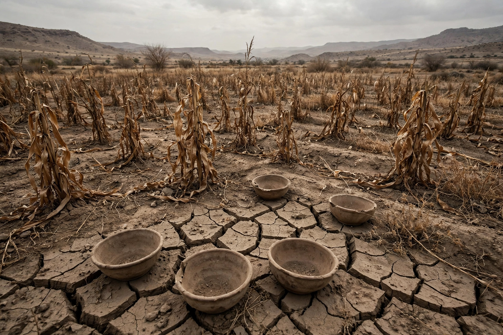

Famine is a widespread scarcity of food, caused by factors such as war, inflation, crop failure, population imbalance, or government policies. It is accompanied by regional malnutrition, starvation, epidemic and increased mortality.

| Famine | |
|---|---|
| Definition | IPC Phase 5 catastrophe |
| Causes | Conflict, drought, policy, price shocks |
Amartya Sen argued most modern famines stem from entitlement failures rather than absolute food shortage. Conflict is the leading driver today — in Sudan, Gaza, Yemen and South Sudan — often with drought as a multiplier, as in Somalia's 2011 famine.
Famine declarations use the Integrated Food Security Phase Classification (IPC). Agencies such as the World Food Programme and OCHA coordinate relief.
Recreated from memory.